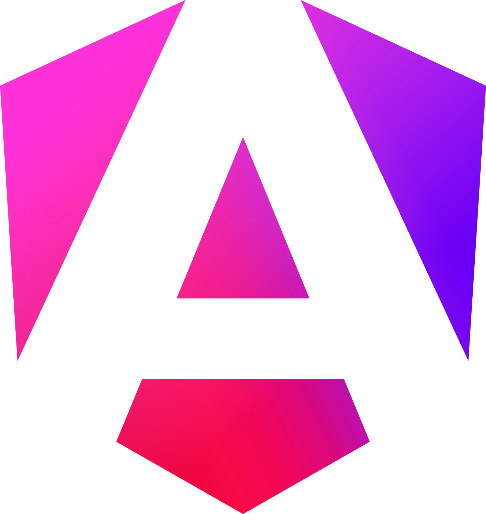

Compétences générales
- Langues : Espagnol, Anglais
- Informatique : Excel, PowerPoint, Certification PIX
- Travail en équipe
- Élaboration de statistiques
- Sens des responsabilités
- Organisation et priorisation des tâches
- Polyvalence
- Autonomie
- Adaptabilité
Une présentation claire de mon profil, de mes formations, de mes expériences professionnelles et de mes compétences.
Je suis actuellement étudiante en Licence 3 Informatique parcours MIAGE (Méthodes informatiques Appliquées à la Gestion des Entreprises) à l'Université d'Orléans. Après l'obtention de mon BTS SIO option SLAM (services informatiques aux organisations), j'ai choisi de poursuivre mes études en MIAGE, un parcours qui associe le développement informatique, la gestion et le management. Cette formation correspond parfaitement à mon parcours, puisque je suis titulaire d'un baccalauréat STMG et que j'ai effectué une première année de BUT GEA (Gestion des Entreprises et des Administrations) avant de me réorienter vers l'informatique. Elle me permet de réunir mes connaissances en gestion avec les compétences techniques acquises en développement afin de concevoir des solutions adaptées aux besoins des organisations. Mes stages et mes projets personnels m'ont également permis de mettre ces compétences en pratique à travers le développement d'applications répondant à des problématiques concrètes.
Un ensemble de compétences techniques et professionnelles développées durant mes cours, mes projets et mes stages.




Mon parcours scolaire et mes expériences professionnelles principales.
Continuer à développer mes compétences en développement web, applications métiers, bases de données et gestion de projets informatiques.